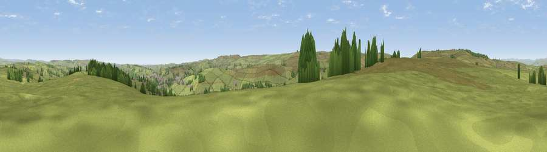

Viewpoint near Stanbury
#19018 in England · top 30% of its area beats it · near StanburyThe view, rendered

A 360° render of this exact spot computed from the terrain model, tree cover and land cover — summer colours, afternoon light, calibrated against photographs of famous viewpoints. Real trees, hedges and buildings will differ in detail.
The panorama
Grey silhouette: terrain skyline in each direction (720 bearings, Earth curvature and refraction included). Dashed green: skyline with trees (+15 m) and buildings (+8 m) as obstacles. Blue strip: how far the ground is visible on each bearing.
Where the view opens
Wedge length = distance to the farthest visible ground on that bearing (vegetation-aware). Rings at 10, 25 and 50 km.
What fills the view
92% grassland · 6% woodland · 2% built-up
Angular shares of the visible panorama (visual magnitude), not map area. Landscape diversity 0.15 (0–1 Shannon).
Key numbers
More beautiful places nearby
The staircase of upgrades: each row has a higher view potential than everything closer. Driving times are estimates from straight-line distance, calibrated against real road routing — check an actual route before setting out.
| Place | Direction | Drive | Score |
|---|---|---|---|
| Steeton Moor | NNE · 4 km | ~9 min | 58.7 |
| Viewpoint near Ickornshaw | WNW · 4 km | ~9 min | 59.4 |
| Combe Hill | W · 5 km | ~11 min | 60.0 |
| Viewpoint near Sutton | NNW · 5 km | ~11 min | 63.5 |
| Viewpoint near Cowling | NNW · 5 km | ~11 min | 65.0 |
| Viewpoint near Wycoller | WSW · 7 km | ~15 min | 66.3 |
| Lad Law (Boulsworth Hill) | WSW · 8 km | ~17 min | 71.5 |
| Viewpoint near Embsay | N · 17 km | ~30 min | 74.5 |
53.84252, -1.99046 · source: screening · position refined by local search. Computed location — check access rights before visiting.